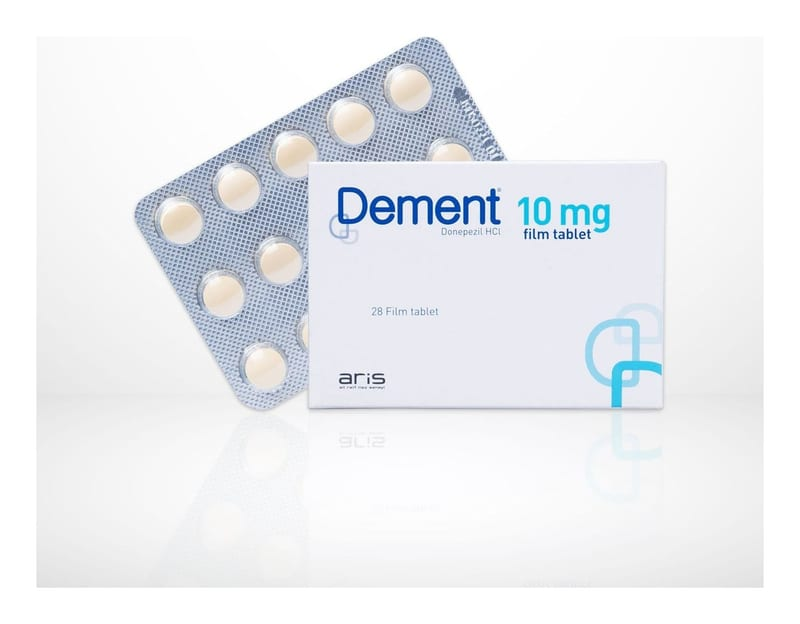

Dement 10 mg Film Kaplı Tablet, 14 Adet

Ne için kullanılır
KT · Bölüm 1DEMENT®(Donepezil hidroklorür) 10 mg film kaplı tabletler, sarı renkte, yuvarlak şekildedir. Her bir film kaplı tablet 10 mg donepezil hidroklorür içerir ve 28 ve 84 film kaplı tabletlik ambalajlarda sunulmuştur.
DEMENT®, hafif ve orta şiddetli Alzheimer tipi bunama belirtilerinin tedavisinde kullanılır ve etkin maddesi donepezil hidroklorür, asetilkolinesteraz inhibitörleri olarak anılan bir ilaç sınıfına aittir.
DEMENT®yalnızca erişkin hastalarda kullanılır.